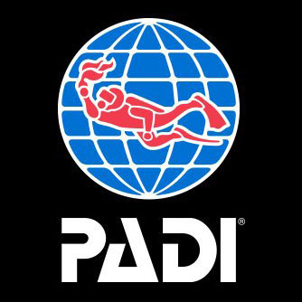

Master Scuba Center
Gili Air

Master ScubaGili Air
Located in the heart of the idyllic Gili Islands, Master Scuba Diver Resort on Gili Air offers world-class diving experiences for adventurers of all levels. Our dive sites are home to vibrant coral gardens, abundant marine life, and most famously—sea turtles. Dive alongside these gentle giants in their natural habitat, a daily highlight for many of our guests. With experienced PADI instructors, small group sizes, and a strong focus on safety and environmental awareness, we provide personalized dive adventures that are as enriching as they are unforgettable. Whether you're taking your first breaths underwater or advancing your dive education, Master Scuba Diver Resort is your gateway to the magic of Gili Air’s underwater world.
Your First Breath Underwater – Discover a Whole New World.
Have you ever wondered what it feels like to breathe underwater? The PADI Discover Scuba Diving program is an introductory experience for people who want to try scuba diving without committing to a full certification course. A qualified PADI Professional explains the basic principles, helps you become familiar with the equipment, and directly supervises your underwater experience.
What you will experience
Course information
Try scuba diving and discover the underwater world with MASTER SCUBA CENTER.
Take Your First Step Towards Becoming a Certified Scuba Diver.
The PADI Scuba Diver course is designed for people who want a recognized entry-level certification but have limited time. It covers essential diving knowledge and skills and qualifies graduates to dive under the direct supervision of a PADI Divemaster or Instructor, within the limits of their certification.
What you will learn
Course information
Continue your education later by upgrading to PADI Open Water Diver.
Become a Certified Diver. Explore the Ocean. Discover Freedom Underwater.
The PADI Open Water Diver course is the world’s best-known entry-level scuba certification. It teaches beginners the knowledge and practical skills needed to dive with a buddy, without direct professional supervision, within the limits of their training and certification.
Your training journey
Course information
Take Your Diving Skills to the Next Level.
The PADI Advanced Open Water Diver course helps certified divers build experience, improve confidence, and explore different types of diving. It is not simply about going deeper: it is an opportunity to practice new skills and broaden your underwater experience with an instructor.
What you will experience
Course information
Discover more, build experience, and become a more confident diver.
Become a More Confident Diver. Learn to Help Others.
The PADI Rescue Diver course develops a diver’s awareness, confidence, and ability to help prevent and manage diving problems. Students learn to recognize stress, assist other divers, and respond to a range of emergency situations through knowledge development, rescue exercises, and realistic scenarios.
What you will learn
Course information
Become a better buddy and a safer, more capable diver.
Be Prepared. Be Confident. Make a Difference.
Emergency First Response training teaches practical first aid and CPR skills for responding to medical emergencies. The courses are suitable for divers and non-divers and focus on building the confidence to provide care until professional medical assistance is available.
Primary Care (CPR)
Secondary Care (First Aid)
Practical training
Students practice skills and work through realistic scenarios with an EFR Instructor.
Course information
Learn essential first-aid skills and be ready to help when it matters.
Turn Your Passion for Diving into a Professional Career.
The PADI Divemaster course is the first professional-level certification in the PADI recreational diving system. It is designed for experienced divers who want to develop leadership, assist with diver training, and supervise certain recreational diving activities within PADI standards and local regulations.
What you will develop
Course information
Build your skills, develop your leadership, and take the first step towards a diving career.
Refresh Your Skills. Rebuild Your Confidence. Get Back Underwater.
Have you been away from scuba diving for a while? The Scuba Tune-Up / Refresher program helps certified divers review essential knowledge and practical skills before returning to the ocean. An instructor can tailor the session to your experience, comfort, and needs.
What you can refresh
Course information
Get back in the water with renewed confidence. A refresher does not replace required training or certification.
Big Adventures for Little Ocean Explorers!
The PADI Bubblemaker program introduces children to the fun of scuba diving in a controlled, enjoyable environment. Children learn how scuba equipment works and experience breathing underwater under the direct supervision of a qualified PADI Professional.
What children will experience
Course information
Give young explorers a fun first taste of the underwater world.
Looking for a more personalized adventure? Book a private dive guide or instructor and explore the underwater world at your own pace, tailored exactly to your needs.
Private Dive boat
Private DM/Instructor
MASTER SCUBA CENTER is based on Gili Air Island, with diving activities around Gili Air, Gili Trawangan, and Gili Meno. The three islands offer a variety of tropical underwater environments and dive experiences.
|